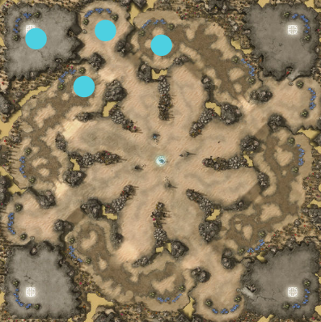

"B2" StarCraft 2 Bot
Dec 2021
A Zerg player AI for StarCraft 2 using C++ and SC2 API. Made in a team of 4 for "CMPUT 350 - Advanced Game Programming" class
at the University of Alberta. This bot was made over the course of 3 months after which our bot would compete
with bots made by other.
groups. Our team had never played StarCraft before, so it was also a learning experience about the strategies in the game. We
got 6th place, which, given our inexperience, we were happy with. We also happened to make the only Zerg bot!
C++
CMake
SC2 API

Strategy
The strategy for our bot involves mostly around map control, and abusing the low individual unit cost that the
Zerg class offers. Our bot's main goal is to spread itself across the map, increasing production rates of units and by
this to increase our attack power. Because the Zerg have access to high mobility while over creep, this strategy also
allows units to be distributed across the map, and still have easy access to nodes that need defending.
Initially, we planned on only using zerglings for their low unit cost and high mobility, but we discovered that towards the late game this strategy broke down because of an inability to hit flying units, and also the weak damage of the zerglings. Because of this, we transitioned to training more powerful units, and units with the ability to hit flying enemies.
Initially, we planned on only using zerglings for their low unit cost and high mobility, but we discovered that towards the late game this strategy broke down because of an inability to hit flying units, and also the weak damage of the zerglings. Because of this, we transitioned to training more powerful units, and units with the ability to hit flying enemies.
Program Structure
The core of the bot is the BasicSc2Bot class. Within the BasicSc2Bot class is a vector of the class Node.
The BasicSc2Bot class interfaces with the StarCraft 2 API, and acts as a bridge between the API and the various
nodes we have created. Each Node instance carries out the work done in a single base, acting as a “sub-bot”, partitioning
the work done. This allows the program to be modular, so that the bot's territory can expand easily. Tags are used to
assign units to each corresponding base in a vector within the node class.
As the Node class cannot directly access the StarCraft 2 API, the BasicSc2Bot class also updates the information known by each node for each update. Any time a unit is created it is added to the closest node, unless that unit is itself a hatchery, which gets added to its own new node.
As the Node class cannot directly access the StarCraft 2 API, the BasicSc2Bot class also updates the information known by each node for each update. Any time a unit is created it is added to the closest node, unless that unit is itself a hatchery, which gets added to its own new node.
Base Creation, Expansion, and Control
To build up the base, the node class generates new units and buildings according to conditions set in the program per update.
Buildings are placed on a random location located somewhere in the vicinity of the base. These buildings will also be in
the unit vector of a certain node. Nearby vespene gas locations are also obtained, and extractors are developed onto it
for each base if possible.
Throughout the game, the number of units for each unit type related to each node is tracked. This number helps determine what buildings need to be constructed, and how many units to make and when to send out attacks.
Throughout the game, the number of units for each unit type related to each node is tracked. This number helps determine what buildings need to be constructed, and how many units to make and when to send out attacks.

To expand territory, a new hatchery is built when the necessary conditions are met. Building a new hatchery will create
a new node object, in which the new hatchery will be the center of. Hatcheries must be placed in locations nearby vespene
gas and minerals to ensure efficiency. So, for each map, predefined locations are used to place hatcheries onto. As the map
is rotationally symmetrical, only saving the displacement of each hatchery location from the starting location was necessary.

To control units, each Node delegates orders to the units related to itself. In each update, all the units under that
node are looped through and given their “regular task” when needed. For example, larva will morph into a certain unit
and queens will generate larva. However, these tasks can be overwritten by special tasks, such as attacking, moving defense,
and creating a new base.
The buildings necessary to create these units are constructed throughout the game. Unit morphing is prioritized such that more advanced units able to be created will be created first (given that there are enough materials). A balance of ground and flying units is ensured. At the beginning of the game, we send a single zergling to scout out the map initially in order to locate the location of the enemy base. The zergling checks all the possible enemy spawn points, and if the zergling is killed, it is determined that the base is near that location. This information will then be used when attacking. A scout Zergling will continue to be sent around the map for the remainder of the game, to discover any other enemy bases that could be located at expansion nodes.
In order to ensure that we actually produce early game units in the early game, and late game units in the late game, we keep track of the time each node has existed for. We use this value to set a variable to keep a minimum amount of minerals around when we create a new unit. Depending on how high the cost is, and how important to the late game the unit is, this minimum can be subverted. In this way, low value unit production in the late game is kept to a minimum.
The buildings necessary to create these units are constructed throughout the game. Unit morphing is prioritized such that more advanced units able to be created will be created first (given that there are enough materials). A balance of ground and flying units is ensured. At the beginning of the game, we send a single zergling to scout out the map initially in order to locate the location of the enemy base. The zergling checks all the possible enemy spawn points, and if the zergling is killed, it is determined that the base is near that location. This information will then be used when attacking. A scout Zergling will continue to be sent around the map for the remainder of the game, to discover any other enemy bases that could be located at expansion nodes.
In order to ensure that we actually produce early game units in the early game, and late game units in the late game, we keep track of the time each node has existed for. We use this value to set a variable to keep a minimum amount of minerals around when we create a new unit. Depending on how high the cost is, and how important to the late game the unit is, this minimum can be subverted. In this way, low value unit production in the late game is kept to a minimum.

Defence and Offence
In order to create a strong defence, we had decided that units should move to the location being attacked to ensure that the enemies are quickly defeated without destroying too many of our bases’ structures. To implement this mobile defense in our bot, the node which has received the most amount of damage (the ratio of the hatchery’s current health and max health) is determined per update within the BasicSc2Bot class. Whenever the most damaged Node has changed, defense units, consisting of spine crawlers, spore crawlers and zerglings, are moved to the location of the corresponding node. Defense is also moved whenever a new base is constructed as these bases are closer to the center of the map, and thus are more likely to be attacked.
In order to attack the enemy base, we decided to attack early and often. In the early game stage, we gather small groups of army units to disturb the enemy’s economic development. While doing so, our base prepares for the later major attacks by producing stronger army units and investing in researching unit upgrades.
The Ambush function, which is called when there are enough army units, sends an army of a certain amount towards the expected enemy location. The SearchAndAmbush function is called when the number of attackers is above 50, and sends an all-out attack to completely clear remaining enemy units at the end of the game. As the game progresses, the necessary amount of army units needed to call an attack increases. This is done to scale with the expected size of the army at that point in the game, so that the base is not left completely undefended.
In order to attack the enemy base, we decided to attack early and often. In the early game stage, we gather small groups of army units to disturb the enemy’s economic development. While doing so, our base prepares for the later major attacks by producing stronger army units and investing in researching unit upgrades.
The Ambush function, which is called when there are enough army units, sends an army of a certain amount towards the expected enemy location. The SearchAndAmbush function is called when the number of attackers is above 50, and sends an all-out attack to completely clear remaining enemy units at the end of the game. As the game progresses, the necessary amount of army units needed to call an attack increases. This is done to scale with the expected size of the army at that point in the game, so that the base is not left completely undefended.